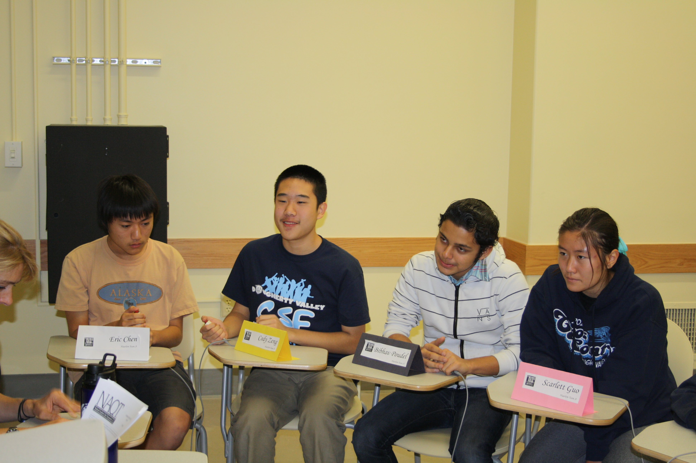

 Haarlem Quiz Bowl competes at the High School level in the Varsity and Junior Varsity division in the world-known Cal Cup series organized in the campus of the University of California, Berkeley. Those events usually happen Saturday, but a Sunday tournament is not impossible.
Due to scheduling issues at our school, we must organize our weekly practices after school. We tentatively give Tuesday as the day of our weekly meeting. Each meeting lasts about one hour and will mostly consits of buzzer practice with previously released Quiz Bowl packets, including our collection of not-relased NAQT official packets. Although the presence is not required and the absences are not taken physically, the members' overal attendance impression will be considered for an officer application at the end of the year.
We will probably attend an easier college-level tournament at the University of California, Berkeley campus, but it is yet to be confirmed. Keep in touch with our tweets, our posts on the Facebook page and the information we pit on Schoolloop and Haiku.